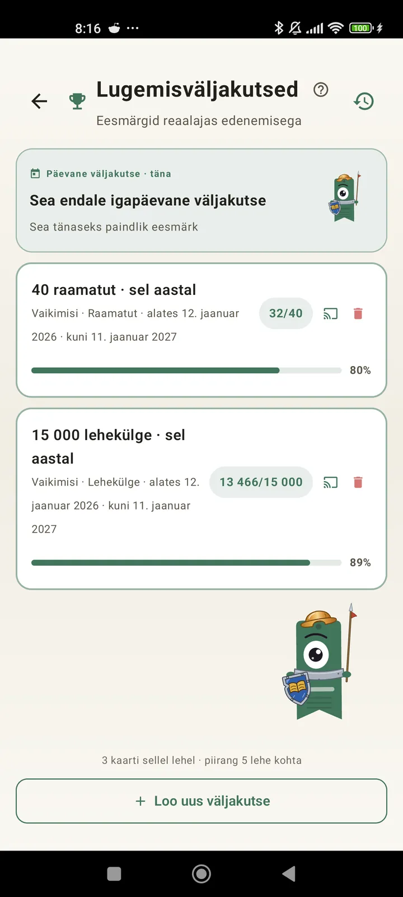

Õpi end lugejana tundma
Väljakutsed, bingod, vidinad ja muud funktsioonid, et oma lugemisest maksimum võtta. Uus versioonis 3.7: väljakutsete ja bingo vidinad.

Lugemisväljakutsed
Sea eesmärke lehekülgede, seeriate või žanrite järgi. Kuni 15 aktiivset väljakutset tasuta, Pro-ga piiramatult. Lisaks kohandatav päevane väljakutse, mis piirangu hulka ei lähe.

Päevane väljakutse
Iga päev uus eesmärk. Täida väljakutse enne keskööd, et seeria jätkuks.

Lugemisbingo
Iga kuu kaks uut bingot temaatiliste ruutudega. Täida ridu, veerge või terve kaart.

Nädala kokkuvõte
Igal esmaspäeval ülevaade sinu nädalast: loetud leheküljed, aeg kokku, seeria ja võrdlus eelmise nädalaga.

Kuu kokkuvõte
Kui kuu lõpeb, teeb Lecturameter kokkuvõtte: leheküljed, aeg, lõpetatud raamatud, sinu tempo päevade kaupa ja kuu raamat.

Bingo vidin Pro
Selle kuu bingokaart alati silme ees, koos täidetud ruutude ja tehtud ridadega.

Raamatu vidin Tasuta
Näe loetavat raamatut otse avakuval: kaas, pealkiri, autor, leheküljed ja edenemise protsent, alati ajakohane. Suurust saab muuta, et see sobiks kuhu iganes soovid.
Ausalt, sõber, see rakendus on nagu teraapia. Lugesin varem paar lehekülge päevas, nüüd umbes 20 ja aina rohkem.Kasutaja tagasiside, saadetud e-postiga

Kuude võrdlus Pro
Kiire pilk viimastele kuudele ilma rakendust avamata. Tulbad iga kuu lehekülgedega ja jooksev kuu esile tõstetud, et näeksid ühe pilguga, kas sel kuul läheb paremini või halvemini kui eelmisel.

Väljakutsete vidin Pro
Sinu aktiivsed väljakutsed ja nende edenemine avakuval. Vali kuvatavad väljakutsed Väljakutsete kuvalt.